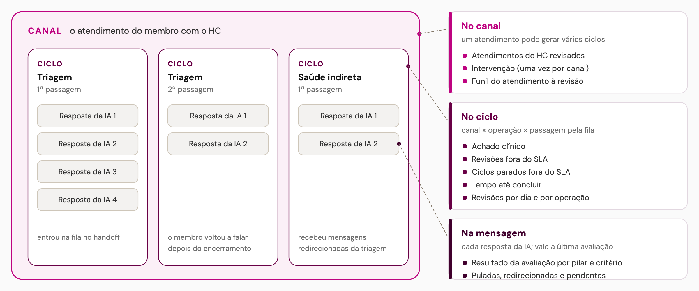
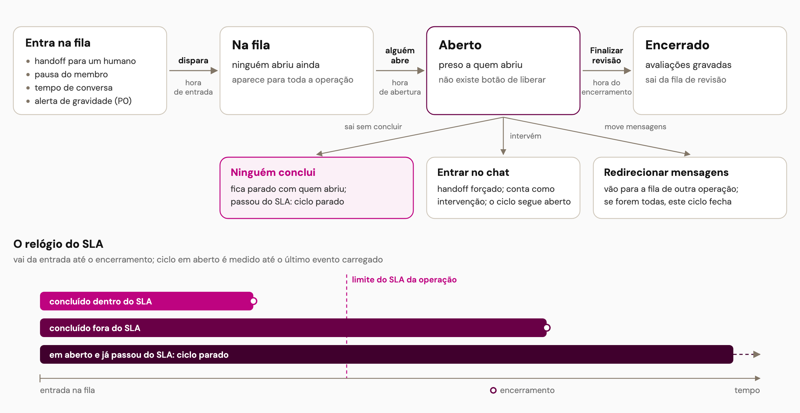
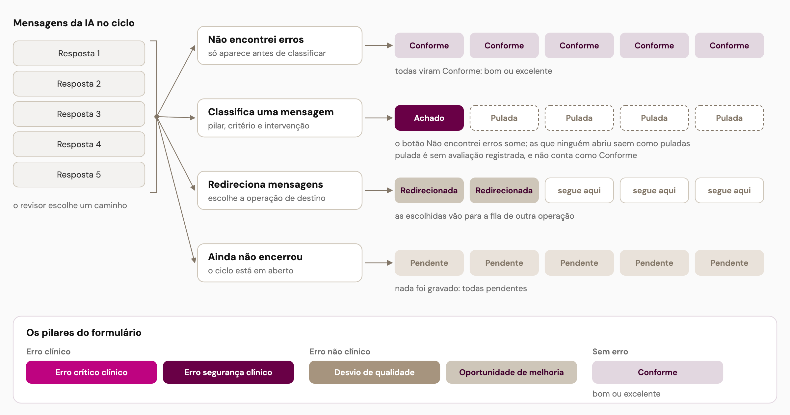
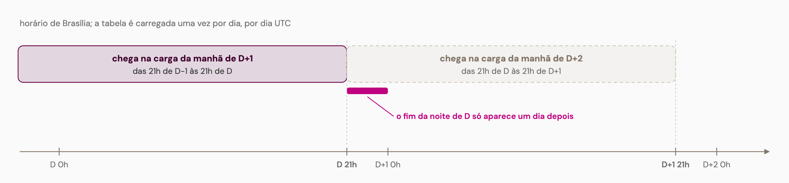

Revisão de canais do Health Companion
Como ler os números da revisão: os grãos, o ciclo de vida de uma revisão, o destino de cada mensagem e quando o dado chega.
1. Três grãos: canal, ciclo e mensagem
O canal contém ciclos de revisão, e cada ciclo contém as respostas da IA. Cada indicador vive em um desses grãos.

2. O ciclo de vida de uma revisão
Quem abre o atendimento fica com ele até encerrar; o SLA corre da entrada ao encerramento.

3. O que acontece com cada mensagem
Pulada não é Conforme: é a mensagem que ficou sem avaliação quando o revisor encerrou depois de registrar um achado.

4. Quando o dado chega
A carga é diária por dia UTC: o que acontece depois das 21h de Brasília só aparece na carga do dia seguinte.
